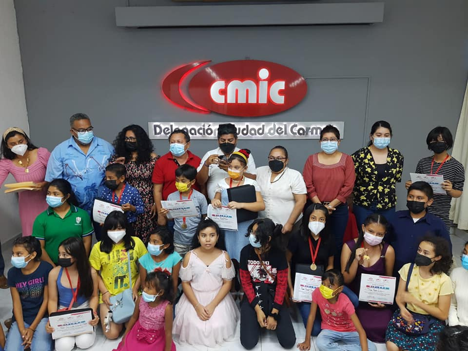
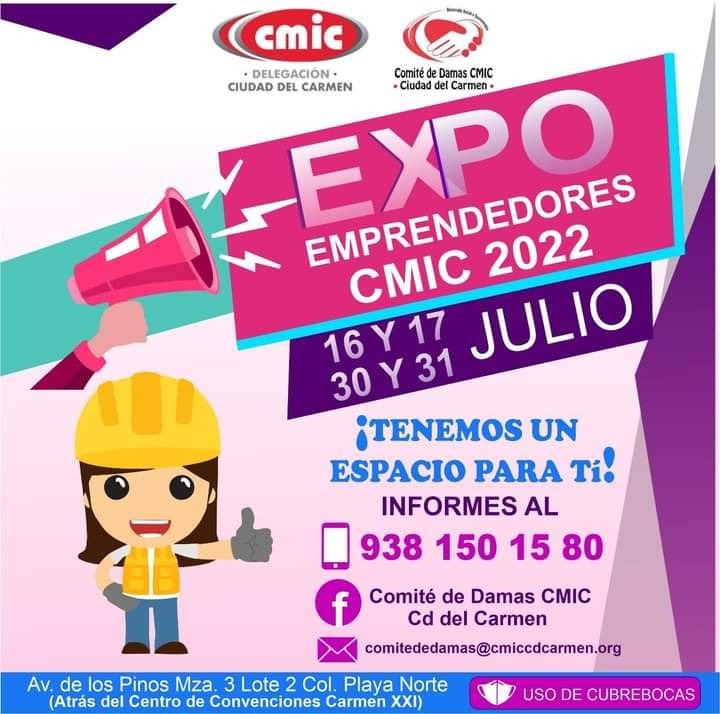

Objetivo
Realizar acciones asistenciales a personas, sectores y regiones de escasos recursos, comunidades y grupos
vulnerables, apoyo a trabajadores de la construcción y sus familias.
Eventos Realizados
Exposición de Arte.
Los niños y jovenes presentan sus obras de arte, en la cual nos hablan sobre el medio ambiente.

Medidas de Prevención Ante Situaciones de peligro.
Los niños aprenden a como actuar en una situación de emergencia, recuerden que amar a
nuestros hijos es también enseñarle medidas de prevención.
Expo Emprendedores
Porque nos importas, el comite de Damas CMIC Cd del Carmen te invita a participar en
la Expo Emprededores que se llevara acabo los días 16.17,30 y 31 de julio, ven y conoce
a nuestros Emprendedores
